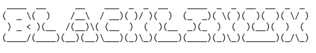

Blacklinux Home -
Blacklinux News -
Blacklinux Archive -
Blacklinux Support -
Downloads
Blacklinux - Updates & Zukunft
Blacklinux ist eine Distrobution erschaffen und gegründet von Juliaaan2502. Seit dem Release wurde auf der Qualität der Software gesetzt. Leider gab es bis heute noch keien Freiwiligen die mit an der Linux-Distro arbeiten wollten.
Bis jetzt gab es noch keine Richtigen Release, sondern nur WSL (Windows Subsystem for Linux) Release, was sehr minimal ist. Leider funktioniert der Download-Server wegen Technichen Gründen nicht mehr, was heißt das man nirgendwo Blacklinux als Image bekommt.
Da Blacklinux noch nie wirklich Populäritat geschafft hatte, und einigen den Namen abgeschreckt hatte werde ich das Projekt mit der Blacklinux Version 1.4.2 vermutlich beenden, weil das zu viel Arbeit ist, weiter am Blacklinux Projekt zu arbeiten.
Der Größte Fehler war das ich Blacklinux schon früh angefangen habe, wo ich Linux kannte. Vielleicht kannte ich Linux so ungefähr 2 Monate und wusste noch nicht so viel über der Linux-Shell.
Ob je ein Devirant bzw eine Weiterführung von "Blacklinux" kommen wird, steht unklar.
Release Kanidat von Blacklinux Dist 2021
2021.04.28 - Blacklinux 1.2 (First Dist Release)
2021.05 - Blacklinux 1.3 (First Dist Release)